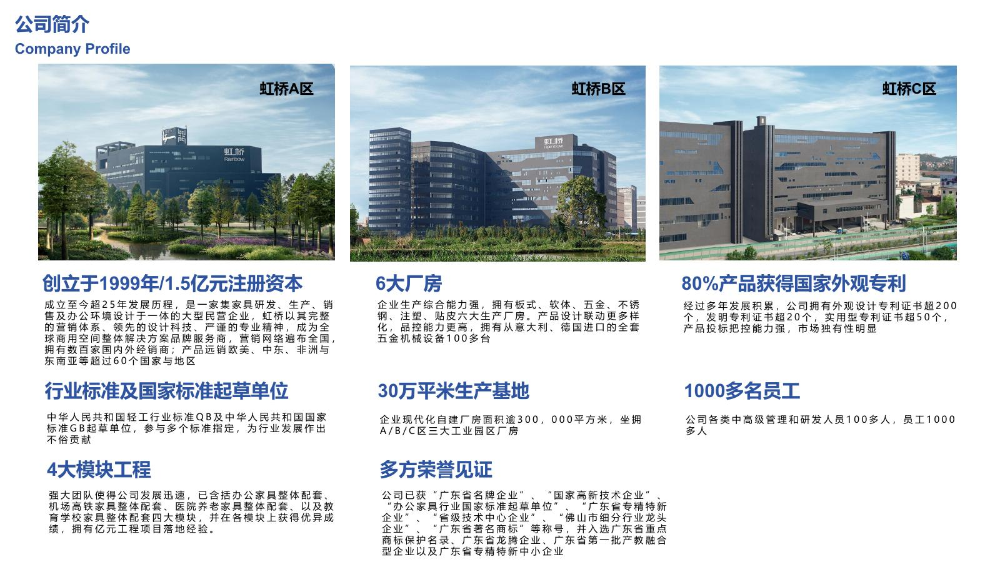
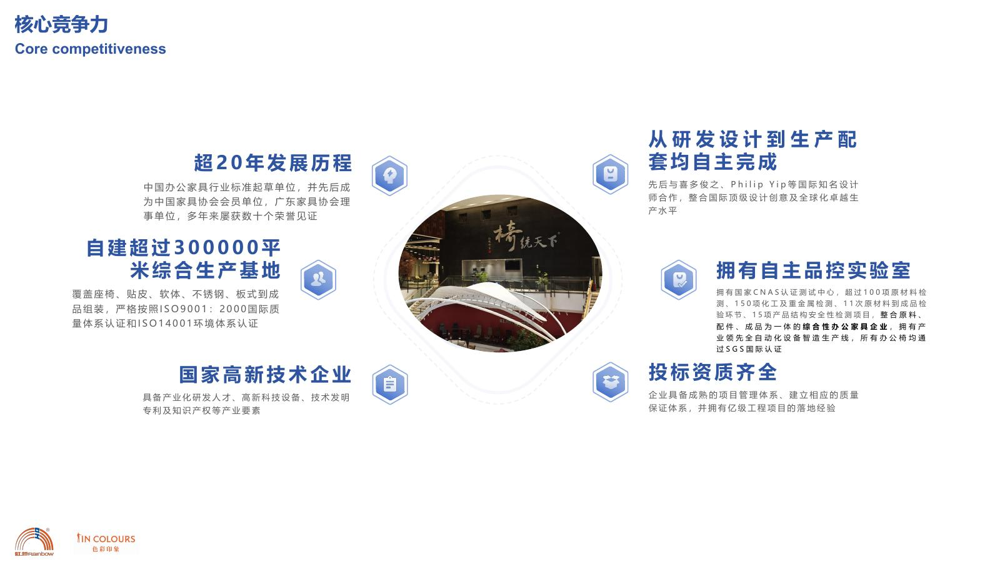

生产基地
40万㎡现代化生产基地，支撑稳定生产、批量配套和工程项目交付。
About Rainbow
虹桥办公家具位于中国佛山顺德龙江，长期服务中高端企业客户、工程项目客户、设计公司、经销商与海外客户。

Company Profile
虹桥办公家具创立于1999年，位于中国佛山顺德龙江，拥有40万㎡现代化生产基地、2万㎡现有实景展厅，并有4万㎡新展厅正在装修升级中。
虹桥围绕总裁办公室、会议室、员工办公区、商务接待区、学校、医养、机场高铁及工程项目空间，提供从产品选型、空间搭配、生产制造、项目交付到售后服务的一站式办公空间解决方案。
Strength
40万㎡现代化生产基地，支撑稳定生产、批量配套和工程项目交付。
2万㎡现有实景展厅，让客户提前看到空间氛围、材质细节和整体搭配效果。
覆盖总裁办公室、会议室、员工办公区、接待区、学校、医养、机场高铁等多类场景。
资料显示虹桥具备检测和品控体系，适合对环保、结构安全和耐用性有要求的项目客户。
Quality
虹桥不是低价路线，也不把官网做成普通卖场。真正影响企业办公空间效果的，往往是家具比例、材质、色彩、功能、交付和售后。
这也是虹桥官网新版需要重点表达的内容：让客户看到产品背后的工厂能力、空间审美、项目管理和长期服务。
